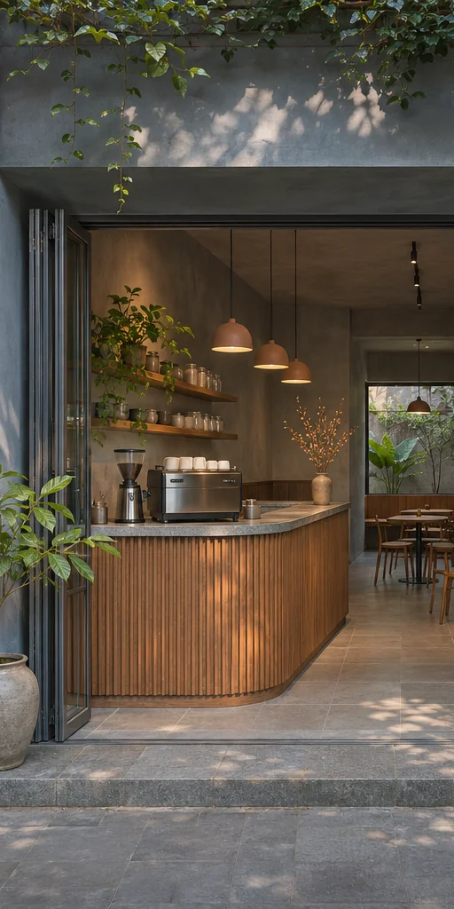
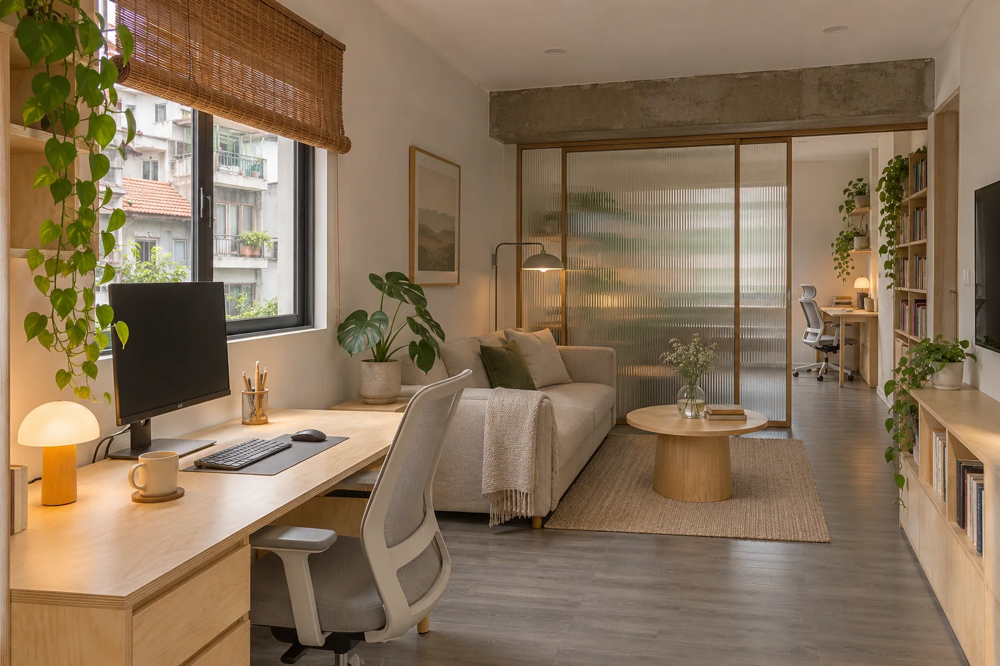
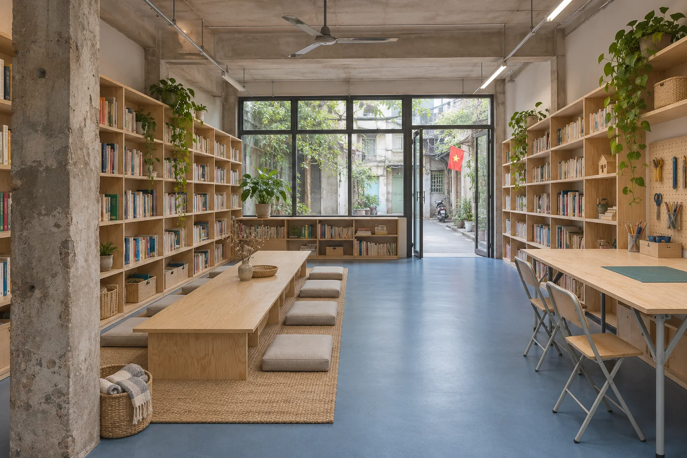

Nhà ở · 84 m²
Nhà ống Bậc Sáng
Đưa ánh sáng xuống tầng giữa của căn nhà ngang bốn mét.
Dùng làm ví dụ trong yêu cầuCải tạo công trình hiện hữu
Sáu tình huống minh họa cho nhà ở, mặt bằng kinh doanh, nội thất và sửa chữa kỹ thuật. Mỗi hồ sơ có phạm vi, quyết định thiết kế và tài liệu bàn giao.
Nhà ở · 84 m²
Đưa ánh sáng xuống tầng giữa của căn nhà ngang bốn mét.
Dùng làm ví dụ trong yêu cầu
Thương mại · 56 m²
Tổ chức quầy để khách chờ không chắn lối vào.
Dùng làm ví dụ trong yêu cầu
Nội thất · 27 m²
Giữ khu chậu rửa và mở thêm đoạn bàn chuẩn bị.
Dùng làm ví dụ trong yêu cầu
Nhà ở · 65 m²
Tạo hai điểm làm việc trong phòng khách đang sử dụng.
Dùng làm ví dụ trong yêu cầu

Thương mại · 71 m²
Đổi một gian trống thành phòng đọc kiêm lớp cuối tuần.
Dùng làm ví dụ trong yêu cầu